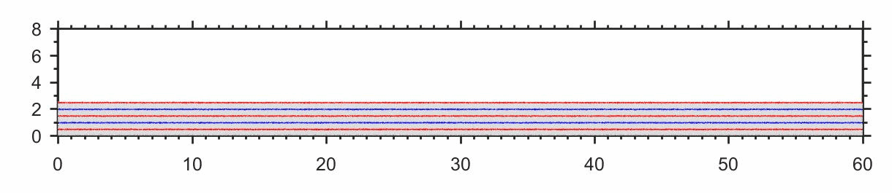
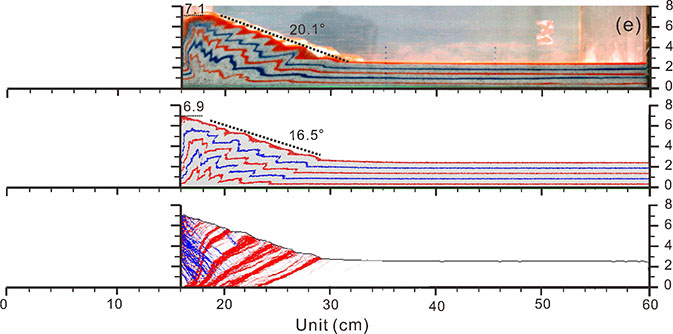

LI Changsheng, YIN Hongwei*, et al. (2021) Calibration of the discrete element method and modelling of shortening experiments. Front. Earth Sci. doi: 10.3389/feart.2021.636512
Original Research: The discrete element method (DEM) is becoming widely accepted as an effective method of addressing tectonic problems in granular materials. It is capable of reproducing structures observed in the analogue model (AM). However, the previous experiments …
Accepted on 05 May 2021
evolutionary process

Unit (cm)
Tectonic evolution process(DEM)



The first one is deformation for the AM. The second is deformation for the DEM. The third is the distortional strain field for the DEM. The shear strain magnitude is shown by color intensity. Red denotes top to the right sense of shear, and blue denotes top to the left sense of shear.
ZDEM script:
Generate. gen.py ：
###################################### # title: 离散元数值模拟与构造物理模拟对比试验:1 沉积 # date: 2021-05-16 # authors: 李长圣 # E-mail: sheng0619@163.com # ref: Li et al. (2021) Calibration of the discrete element method and modelling of shortening experiments. Front. Earth Sci. doi: 10.3389/feart.2021.636512 # more info, see www.geovbox.com ####################################### start set disk hex BOX left 0.5e-3 right 615.0e-3 bottom 0.5e-3 height 110.0e-3 kn=1.5e4 ks=1.5e4 fric 0.3 wall id 4, nodes ( 5e-3 158.0e-3) ( 5.0e-3 5.0e-3), kn= 1.5e4 ks= 1.5e4 fric 0.0 wall id 5, nodes ( 5e-3 5.0e-3) (605.0e-3 5.0e-3), kn= 1.5e4 ks= 1.5e4 fric 0.0 wall id 6, nodes ( 605.0e-3 5.0e-3) (605.0e-3 158.0e-3), kn= 1.5e4 ks= 1.5e4 fric 0.0 gen grid idmin 0 rad discrete 0.1e-3 0.1e-3 0.2e-3 0.2e-3 0.25e-3 0.3e-3, x (5.0e-3, 605.0e-3), y (5.0e-3, 155.0e-3), GROUP ball_rand PROP color red den 1.3e3, fric 0.0, kn 1.5e4, ks 1.5e4 damp 0.4 FIX spin SET frac 0.4 SET GRAVITY ( 0.0, -10.0 ) SET stepbar 1000 SET save 20000 SET print 20000 SET ps 20000 HIST ID 1 INTERVAL 1000 , kinetic HIST ID 2 INTERVAL 1000 , step PLOT hist 2 1 CYC 60000 DEL range x (4.0e-3, 606.0e-3), y (30.0e-3, 1.0), CYC 20000 #save 2del.sav EXP ini_xyr.dat STOPPush. push.py ：
###################################### # title: 离散元数值模拟与构造物理模拟对比试验:2 挤压 # date: 2021-05-16 # authors: 李长圣 # E-mail: sheng0619@163.com # ref: Li et al. (2021) Calibration of the discrete element method and modelling of shortening experiments. Front. Earth Sci. doi: 10.3389/feart.2021.636512 # more info, see www.geovbox.com ####################################### LOAD ini_xyr.dat SET disk hex BOX left 0.5e-3 right 615.0e-3 bottom 0.5e-3 height 110.0e-3 kn=1.5e4 ks=1.5e4 fric 0.3 WALL id 4, nodes ( 5e-3 110.0e-3) ( 5.0e-3 5.0e-3), kn= 1.5e4 ks= 1.5e4 fric 0.0 WALL id 5, nodes ( 5e-3 5.0e-3) (605.0e-3 5.0e-3), kn= 1.5e4 ks= 1.5e4 fric 0.0 WALL id 6, nodes ( 605.0e-3 5.0e-3) (605.0e-3 110.0e-3), kn= 1.5e4 ks= 1.5e4 fric 0.0 PROP color red den 1.3e3, fric 0.0, kn 1.5e4, ks 1.5e4 damp 0.0 FIX spin SET frac 0.4 SET GRAVITY ( 0.0, -10.0 ) SET stepbar 10000 HIST ID 1 INTERVAL 1000 , kinetic HIST ID 2 INTERVAL 1000 , step PLOT 2 1 SET damp lsm 0.04 PROP fric 0.30 PROP color lg PROP color red , range x 0.0 615.0e-3 y 9.0e-3 10.0e-3 PROP color blue, range x 0.0 615.0e-3 y 14.0e-3 15.0e-3 PROP color red , range x 0.0 615.0e-3 y 19.0e-3 20.0e-3 PROP color blue, range x 0.0 615.0e-3 y 24.0e-3 25.0e-3 PROP color red , range x 0.0 615.0e-3 y 29.0e-3 30.0e-3 wall id 4 fric 0.30 xv 40e-3 wall id 5 fric 0.30 wall id 6 fric 0.30 CYC 1 imple wall id 4 xmove 160e-3 save 20e-3 print 10e-3 ps 10e-3 vtk 10e-3 stop
The quantitative method of the thrust wedge based on mesh (Data)
Download：analog model.7z
The images of the analog model.